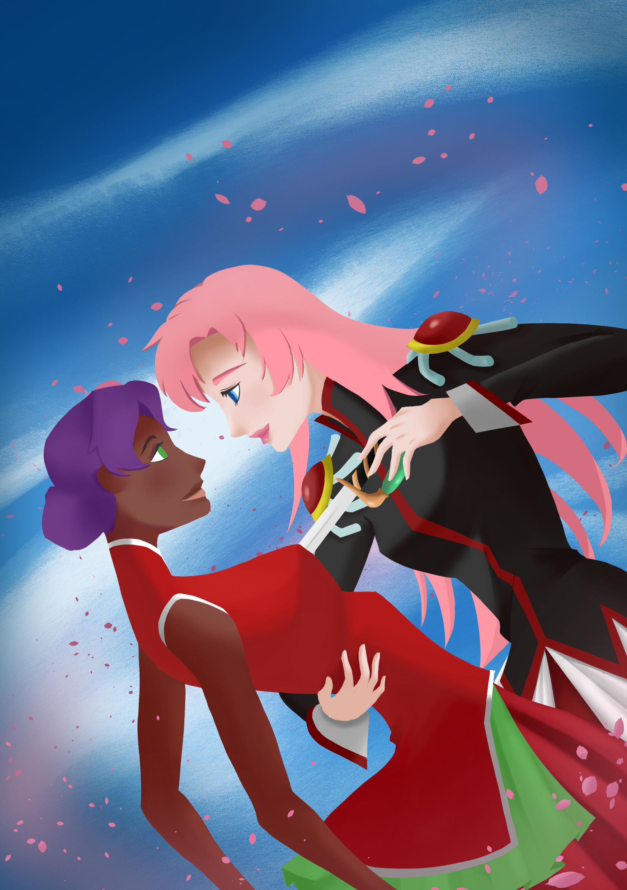

Utena & Anthy - Artwork
published on January 13, 2024

This is fanart of Utena and Anthy from Revolutionary Girl Utena. Although the show itself has a fairly repetitive structure, its unique tone and layers of interpretation make it fairly enjoyable to watch and analyze. It's one of the few animated shows I'd call 'elegant' or 'poetic', even down to its comedy, which plays on its own unique presentation. Utena herself might also have one of my favourite character designs. It's both elaborate but so simple that taking any elements away would alter its' overall feel. It's also clear how much Steven Universe owes its own unique presentation among cartoons to this show. It's an intereting show, and it has a great psuedo-remake/sequel in its movie (which is rightly considered one of the best visually looking anime movies of the 90s).
Critique
I originally planned this last year, but didn't feel like I had the skills to do it, but it turned out well. Overall, I think there are some things to focus on:
- Colouring this artwork took way too long. It was mostly down to trying to emulate a style without lineart, so I'll need to think about how to speed this up. I imagine I'll need to add colors much earlier and build on that instead of sticking with lineart, but we'll see
- The lighting is still fairly bland, I didn't imagine a light source for this one, so its some white light (I didn't even think about reflected light!)
- The painting is also weak. I still just blend things too soft. I'll really need to cut-down on this somehow. Looking at other artworks, they use blending much more pragmatically, and really only within one 'flat-color'. I'll need to break this bad habit somehow
- The different materials are also painted poorly. As an example:
Although, I'm pleased that I actually remembered the light and dark areas of a matte sphere, I didn't know how to account for translucency, metallicness, reflectivity, sub-surface scatttering etc. I need to practice painting different materials more. - The lineart/drawing looked pretty close to what I imagined. Not really a critique, but suprised by how 'stable' the initial sketches were.